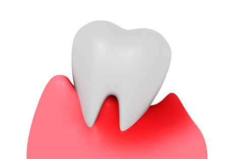
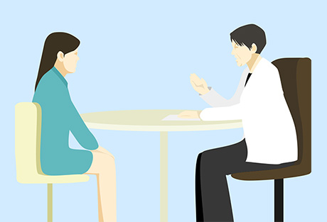
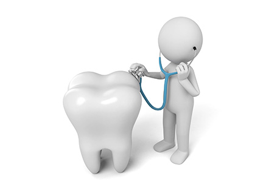
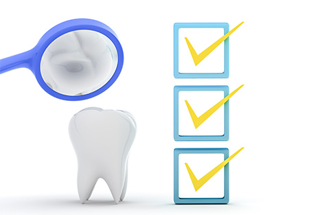
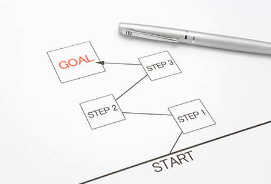
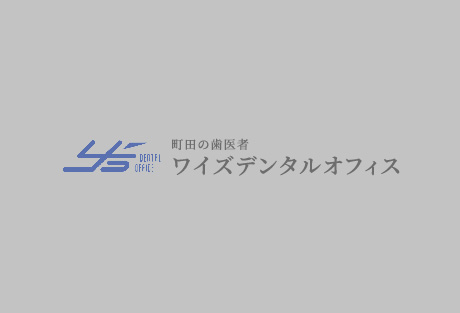
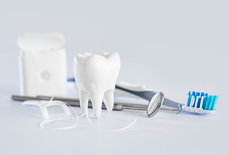
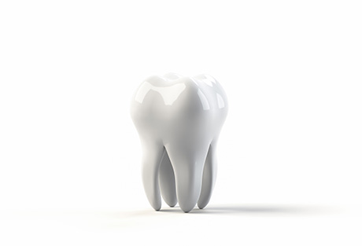

一人ひとりに合った治療計画をご提案する通いやすい歯科医院
町田市の歯医者「ワイズデンタルオフィス」では、患者様とのコミュニケーションを大切に、一人ひとりに適した診療をご提供することを大切にしています。
こちらでは初めてお越しになる方に向け、院長からのごあいさつや診療の流れ、またよくあるご質問への回答などをご紹介します。お子様からご年配の方まで、お口についてのお悩みは何でも当院までご相談ください。
ワイズデンタルオフィスから患者様へ

当院が大切にしているのは、「一人ひとりの患者様に適した治療計画をご提案し、納得して受診していただくこと」です。そこでわたしたちは、何よりも患者様とのコミュニケーションを重視しています。
患者様と歯科医師が同じ方向を向いてともにトラブルと戦わなければ、よい結果は得られません。当院では患者様が前向きに診療に取り組めるよう、患者様のお悩みや想いを汲み取り、丁寧にご説明します。
また、患者様が通いやすい環境づくりも重視しています。具体的な体制としては、土曜診療の実施し、キッズスペース・授乳室を完備しています。さらにスタッフ一同、ホスピタリティ精神を元に、目配り・気配り・心配りを忘れない対応を心掛けています。
「快適な環境で、自分に合った診療が受けられる」と患者様に感じていただけるよう、わたしたちは努力を惜しみません。どうぞお口のお悩みは、お気軽に当院までご相談ください。
院長よりごあいさつ

「むし歯ができたから、あるいは歯周病になったから治療をする」「再発したから、再治療をする」……歯科治療では、長年こういった対症療法がくり返されてきました。しかし病気を発症して治療し、さらに再発して再治療することを繰り返していては、歯や歯ぐきはダメージを受け続け、大切な歯を失うことになりかねません。そこで近年、ようやく予防の大切さが見直されています。
当院では、患者様一人ひとりに合った治療計画を立案します。適切な治療を行うのはもちろん、治療後の再発防止も考慮しています。また先端機器を活用し、衛生管理を万全に行った上で精密な治療を実現していますので、どうぞ安心してご来院ください。常に患者様の立場に立った診療のご提供に努めます。
年齢を重ねても、自分の歯で食事や会話を楽しめるように。そのサポートを、私たちに末永くお任せいただければ幸いです。
ワイズデンタルオフィス
院長 杉山靖史
診療の流れ
STEP01 問診・基本検査

まずはご予約の上ご来院ください。初めに問診を行い、現在のお口のお悩みなどをくわしく伺います。その後、治療に必要となる基本的な検査を実施します。
STEP02 応急処置・カウンセリング

強い痛みなどがある場合には、応急処置を行います。その後カウンセリングにて、治療期間や費用など患者様のご希望を伺います。
STEP03 精密検査

現在のお口の状態をより詳細に把握するため、精密検査を行います。
STEP04 治療計画の立案

精密検査の結果を元に、総合的な診断を行います。その上で初診時に伺った患者様のご希望を考慮し、適切な治療計画を立案します。
STEP05 カウンセリング

治療計画について、くわしくご説明します。わからないこと、疑問点などがありましたら、何でもお尋ねください。
当院では患者様が納得されないかぎり、無理に治療を始めるようなことはありません。どうぞご安心ください。
STEP06 治療開始

治療計画にご納得いただけましたら、その内容に基づき治療を開始します。当院では先端設備を整え、安全かつ高精度な治療が可能です。豊富な知識・経験を持つ歯科医師が治療にあたりますので、安心してお任せください。
STEP07 メインテナンス

一旦治療を終えても、その後のケアを怠れば歯の寿命は短くなってしまいます。当院では日頃のケアについて指導するとともに、専門的なメインテナンスをご提供します。定期検診を欠かさず、ご自分の歯の健康を維持していきましょう。
よくあるご質問
痛みがあるのですが、予約をしないと診てもらえませんか？
強い痛みがある場合は、応急処置にはなりますが、ご予約なしで診療させていただきます。お気軽にご連絡ください。
初診にはどのくらい時間がかかりますか？
初診時は状況に応じて必要な検査を行いますので、多少のお時間をいただきます。その後の通院については、患者様のご都合・ご要望をふまえ、治療計画を立てていきます。
費用はどのくらいかかりますか？
治療費用については、患者様の現在の症状や治療内容などによって異なります。当院では事前にできるかぎり治療の選択肢をご提示します。患者様とご相談の上決定していきますので、まずはお気軽にご相談ください。
医療費控除の対象になりますか？
はい、対象となります。申請には領収書が必要です。再発行はできませんので、大事に保管してください。
院内感染症対策について
コロナ対策について
新型コロナウイルス感染対策に取り組んでいます
新型コロナウイルスの感染拡大にあたり、当院では皆様に安心して来院していただけるよう、以下のことに取り組んでいます。
- 患者様に対する、手指のアルコール消毒および検温のお願い
- 待合室、診療室の定期的な換気・開放
- 待合室を混雑させないための、ご予約時間の調整
- 待合室の雑誌、キッズスペースのおもちゃ・絵本の一時的な撤去
- 待合室、トイレ、診療台および院内共有スペースの定期的な消毒 など
なお患者様におかれましては、発熱や咳、倦怠感などの症状がある場合、また接触者に感染者が確認された場合には、無理をされず、キャンセルのご連絡をお願いいたします。患者様および医療者の健康を守るために必要なことですので、どうぞご理解のほどよろしくお願いいたします。
患者様に安心して治療を受けていただけるように
当院では院内感染を防止し、患者様に安心して来院していただけるよう、以下のことを行っています。
- クリーンな環境で治療を受けていただけるよう、診療室内は常時清潔に維持しています。
- 滅菌器を使用し、治療器具の衛生管理を徹底しています。
- 治療器具は滅菌パックで包装し、治療前まで清潔な状態で保管しています。
- 手袋やコップなどは使い捨てのものを採用しています。
- 口腔外バキュームにより、目に見えない細かな粉塵まで除去しています。